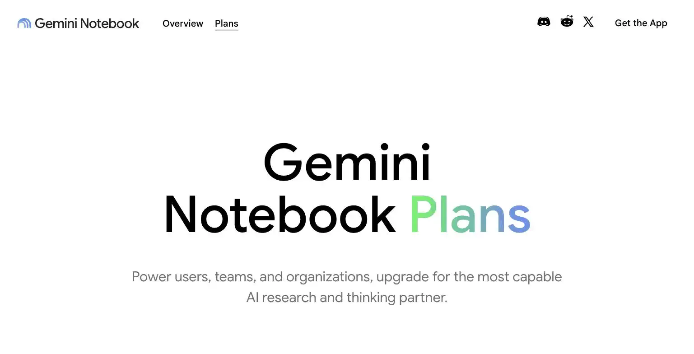
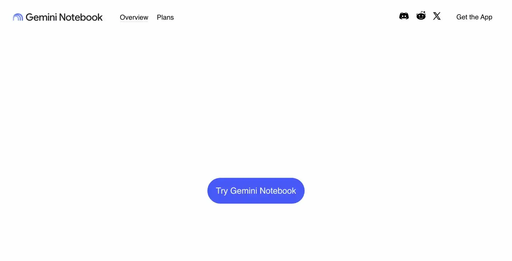

NotebookLM
It read every citation before arguing with anyone. The council remained a little suspicious of how well that was going for free.
NotebookLM is Google's source-grounded AI notebook: upload your own documents, transcripts, or notes and get answers, summaries, and audio overviews that cite back to what you actually gave it, not the open web. The free tier (100 notebooks, 50 sources each, 50 chat questions a day) is generous enough that most solopreneurs never need to pay. The site's verdict is start free and stay there, only step up to NotebookLM Plus ($7.99/month via Google AI Plus) once you're regularly hitting the daily chat cap or need more Audio Overviews.
NotebookLM is the friend who actually reads the citations before arguing with you. Google gave away a shockingly good research assistant for free and forgot to make it annoying, we're still a little suspicious.
- Value for price9.5/10
- Capability8/10
- Ease of use8.5/10
- Trial safety9.5/10

NotebookLM works by grounding every answer in sources you upload yourself, PDFs, Google Docs, meeting transcripts, your own notes, so the AI is answering from your material instead of guessing from general web training data, and every claim links back to the specific source passage it came from.

NotebookLM's core differentiator is that it refuses to answer from general knowledge. Every response is grounded in the documents you upload, with inline citations pointing back to the exact source, which matters if you're using it to research your own market, summarize client calls, or build on proprietary notes rather than public information.
Example from notebooklm.google. Not independently tested by Solos Gems.Pricing breakdown
- Free: 100 notebooks, 50 sources per notebook, 50 chat questions/day, Audio and Video Overviews included
- Google AI Plus ($7.99/mo): NotebookLM Plus tier: 200 notebooks, 100 sources per notebook, 200 daily chats, 6 Audio and 6 Video Overviews/day
- Google AI Pro ($19.99/mo): 500 notebooks, 300 sources per notebook, expanded Deep Research
- Google AI Ultra ($99.99-$200/mo): Highest limits plus 20-30TB of Google storage, aimed at power users, not typical solo use
Why the free tier is the real story
Most "free" AI tools cap you at a handful of uses before pushing a paywall. NotebookLM's free tier is different: 50 chat questions a day and 50 sources per notebook covers real research workflows, competitive analysis, digesting a client's onboarding documents, summarizing a stack of PDFs before a call, without ever approaching the limit for a typical solo operator. The paid tiers exist for people running many notebooks in parallel or generating Audio Overviews constantly, not for someone using it as a research assistant a few times a week.
Pros
- Free tier limits are generous enough for real, ongoing use, not just a trial
- Citations link back to your actual source material, reducing hallucination risk
- Audio Overviews turn dense documents into a listenable summary in one click
Cons
- Cannot be purchased standalone, paid tiers require a Google AI subscription bundle
- Not a general-purpose chatbot, it deliberately won't answer outside your uploaded sources
- Video and Audio Overview generation can be slow on longer source sets
See how this compares to Perplexity Pro →
Common questions
Can I buy NotebookLM on its own?
No, it can't be purchased standalone, paid tiers require a broader Google AI subscription bundle. Confirm what that bundle costs and includes before assuming you can pay for NotebookLM by itself.
Is NotebookLM a general chatbot like ChatGPT?
No, deliberately not. It won't answer outside your uploaded sources, its entire value is grounding answers in your own documents, client notes, transcripts, research PDFs, not open-ended conversation.
Is the free tier enough for regular use?
Genuinely generous, yes. Most solo users can stay on the free tier for a long time, only upgrading once you're consistently hitting the daily chat cap.